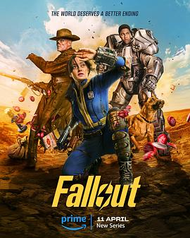

辐射 第一季 / Fallout Season 1
又名：异尘余生(港/台)
依然是游戏种草N年，但是新作越来越多就拖延到一部都没有玩过。设定非常吸引人，剧情也很棒， 又开始给我游戏种草了。啥时候才能有时间哦 orz
作品信息
| 导演 | 乔纳森·诺兰 / 丹尼尔·格雷·朗诺 / 克莱尔·基尔纳 / 弗雷德里克·E·O·托耶 / 韦恩·叶 |
| 编剧 | 查兹·霍金斯 / 吉内瓦·罗伯逊-德沃雷特 / 格雷厄姆·瓦格纳 / 基兰·菲茨杰拉德 / 卡森·D·梅尔 / 卡莉·多内托 / 古尔西姆兰·桑德胡 |
| 主演 | 艾拉·珀内尔 / 阿伦·莫滕 / 沃尔顿·戈金斯 / 凯尔·麦克拉克伦 / 萨莉塔·乔德霍里 / 莫伊塞斯·阿里亚斯 / 戴夫·雷斯特 / 约翰尼·彭伯顿 / 克塞利亚·门德斯-琼斯 / 迈克尔·爱默生 / 弗朗西丝·特纳 / 莱斯利·格塞斯 / 安娜贝尔·奥哈根 / 扎克·切利 / 罗德·卢兹 / 莱尔·利里 / 马特·贝里 / 迈克尔·克里斯托弗 / 克里斯·帕内尔 |
| 类型 | 剧情 / 动作 / 科幻 / 冒险 |
| 制片国家/地区 | 美国 |
| 语言 | 英语 |
| 首播 | 2024-04-10(美国) |
| 季数 | 1 |
| 集数 | 8 |
| 单集片长 | 60分钟 |
| IMDb | tt12637874 |
说过什么
2024-04-13 20:24:39
看过 · 时间来自广播，短评来自标记页
依然是游戏种草N年，但是新作越来越多就拖延到一部都没有玩过。设定非常吸引人，剧情也很棒， 又开始给我游戏种草了。啥时候才能有时间哦 orz
2023-12-03 11:57:26
广播 · 想看
最后一次看到是 2026-08-01T11:04:26+10:00 · 豆瓣原页